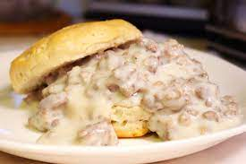

Biscuit and Gravy

Southern comfort in your own home!
This biscuits and gravy recipe uses jumbo buttermilk biscuits
and pork sausage crumbles for a hearty, family-favorite breakfast
that's ready in just 15 minutes.
Growing up my dad always made breakfast for us every Sunday morning.
Usually it was his famous chocolate chip pancakes but occasionally
he would make us biscuit and gravy. This recipe is such a hearty and
delicious breakfast. It is such a comforting dish that will make everyone
in your house leave the breakfast table with a full belly and a smile on
their face!
Ingredients:
- 1 can of refrigerates jumbo buttermilk biscuits
- 1 package of pork sausage (found in the breakfast freezer section)
- 1/4 cup flour
- 2 1/2 cups milk
- salt and pepper to taste
Steps:
- Preheat the oven to 350° F. Arrange biscuits
1 to 2 inches apart on an ungreased cookie sheet.
Bake in the preheated oven until golden brown, about
13 to 15 minutes.
- Meanwhile, cook sausage in a large skillet over medium heat until thoroughly
heated, stirring frequently, about 5 to 6 minutes.
- Stir in flour until well combined. Gradually add milk, stirring continuously,
until the gravy thickens and comes to a boil. Reduce heat to medium-low; simmer
and stir for 2 more minutes. Season to taste with salt and pepper.
- Split biscuits in half. Place 2 halves on each of 8 plates; top with about 1/3 cup gravy.